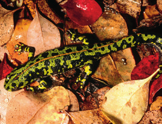
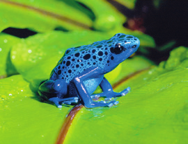
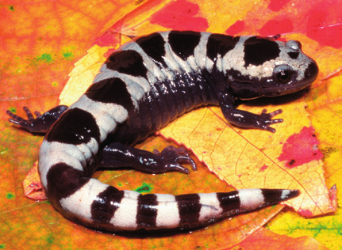
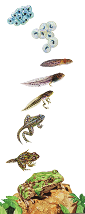

El término anfibio hace referencia a la doble vida, terrestre y acuática, de estos animales. Algunos, como los tritones, pasan toda su vida en el agua; otros, como los sapos, acuden al agua solo para reproducirse.
El cuerpo de los anfibios
Su piel, lisa y húmeda, contiene glándulas que pueden ser venenosas. Las extremidades consisten en cuatro patas y entre los dedos se pueden desarrollar membranas.

Salamandra sobre hojas
La cabeza y el tronco están unidos por un cuello, a veces poco diferenciado. La boca es grande y tiene pequeños dientes. Las narinas se comunican con la cavidad bucal.
Las patas constan de cuatro o cinco dedos. En las ranas y los sapos, las patas traseras están adaptadas al salto y a la natación.
La cola, cuando existe, ayuda a nadar.
Las funciones vitales de los anfibios
Respiran por pulmones, y las larvas, por branquias. También poseen respiración cutánea, que les permite el intercambio gaseoso tanto en el agua como en el aire. Los adultos son carnívoros, aunque sus larvas suelen ser herbívoras y alimentarse de algas.
La fecundación es, por lo general, externa en las ranas y los sapos e interna en las salamandras y los tritones. Los anfibios son ovíparos o ovovivíparos.
Los sapos y las ranas presentan cuerdas vocales, que utilizan para comunicarse y atraer en la época reproductora.
La metamorfosis de la rana
Cuando el huevo eclosiona, aparece un renacuajo con una cabeza globosa y una larga cola, pero sin patas.
Las branquias externas se hacen internas poco a poco.
Simultáneamente, aparecen las patas posteriores y después, las anteriores.
Las branquias internas son sustituidas por pulmones y la cola desaparece.
Imágenes de anfibios

Rana de veneno azul

Salamandra sobre hojas de otoño

Ciclo de vida de una rana